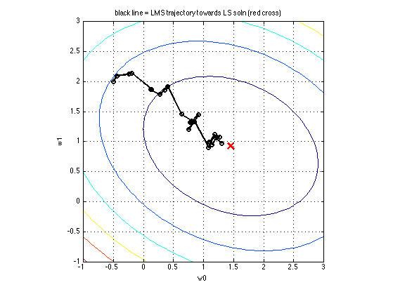
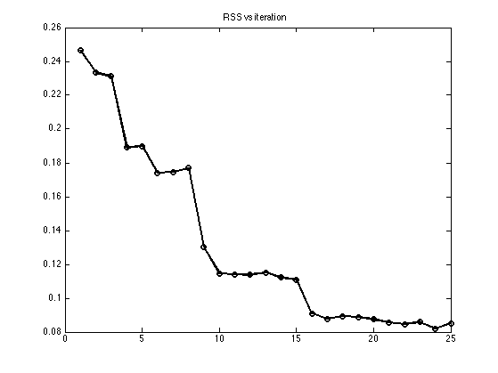

LMS Demo
[X,y]=contoursSSEdemo(true);
d = 2;
w = [-0.5;2];
i = 1;
eta = 0.1;
sf = 0.999;
done = false;
maxIter = 25;
iter = 1;
n = size(X,1);
whist = [];
while ~done
xi = X(i,:)';
yhat(i) = w' * xi;
wold = w;
whist(:,iter) = w;
w = w + eta * (y(i)-yhat(i)) * xi;
rssHist(iter) = (0.5/n)*norm(X*w - y);
etaHist(iter) = eta;
eta = eta * sf;
iter = iter + 1;
i = mod(i,n)+1;
if norm(w-wold) < 1e-2 || iter > maxIter
done = true;
end
end
hold on
plot(whist(1,:), whist(2,:), 'ko-', 'linewidth',2);
title('black line = LMS trajectory towards LS soln (red cross)')
printPmtkFigure('lmsTraj')
figure;
plot(rssHist, 'ko-', 'linewidth', 2);
title('RSS vs iteration')
printPmtkFigure('lmsRssHist')
if 0
figure;
plot(etaHist)
title('step size vs iteration')
end
 